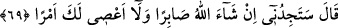

edecek bir bilgi öğretmen için sana tâbi olayım mı?” sözü de buna delâlet eder. Çünkü
yaratılmış birinden öğrenen, harf ve ses vâsıtasıyla öğrenilen zâhirî ilmi öğrenmiştir.
Harfsiz ve sessiz Allah’tan alınan bâtınî ilim böyle değildir. Çünkü o, zevk, ilâhî keşf,
sübhânî ilkâ ve ilham ile alınır. Bütün bâtın ilimleri, ancak zevk, vicdan, şuhûd ve ıyân
ile tahsil edilir; yoksa delil ve burhan ile değil. Bunlar akıl ile elde edilen ilimler
(nazariyyât) değil, tadarak elde edilen ilimlerdir (zevkıyyât). Mücerred tefekkürle ve
bilinen mukadddime ve öncüllerin tertibi ile meydana gelmez.
Vâsıtasız zevk yoluyla değil de, vâsıtalı intikal yoluyla elde edilişi bakımından Hz.
Mûsâ’nın ilmi zâhirîdir. Hızır (a.s.)’ın yaratılışında gâlib olan bâtınî ilimdir. Nitekim
onun velâyeti buna delâlet etmektedir. Eğer onun nebî olduğu kabul edilirse, onun Mûsâ
(a.s.)’a: “Doğrusu sen benimle beraberliğe sabredemezsin. (İç yüzünü)
kavrayamadığın bir bilgiye nasıl sabredersin?!” şeklindeki sözü, zâhir ve risâlet ilmi
tarafının, bâtın ve velâyet ilmi tarafına galib olması bakımından sabredemezsin
demektir. Çünkü hüküm, daha gâlib ve kâhir olana göredir.”
et-Te’vîlâtü’n-Necmiyye’de der ki: Şeyh defâlarca reddetse bile müridin irâdesinde
sâbit olması âdabdandır. Bu reddin kendisinin irâdesindeki sadâkatini imtihan için
olduğunu kabul edip kapısının eşiğinden ayrılmamalı, sabırsızlığı sinekten bile az
olmalıdır. Çünkü sinek kovuldukça tekrar döner. Kelîmullah Mûsâ (a.s.)’ın hâli de
böyledir. Hızır (a.s.) ona şöyle diyerek reddediyordu:
“Doğrusu sen benimle beraberliğe sabredemezsin. (İç yüzünü) kavrayamadığın bir
bilgiye nasıl sabredersin?!” Yâni zâhiren görüşüne muhâlif olan, bâtınen
yapılmasındaki hikmete Allah’ın seni muttalî kılmadığı bir fiile nasıl sabredersin?!
Senin yolun, Allah’ın sana indirdiği kitap ile zâhirî duruma göre hükmetmendir. Benim
yolum ise Allah’ın ilm-i ledünnîden bana emretttiği bâtınla hükmetmemdir. Ben O’nun
hikmetinin gereği, eşyanın hakîkat ve künhüne, işlerin inceliklerine vâkıf kılındım.
Çünkü Allah hüviyyeti ile beni benden fânî ve kendi ulûhiyyeti ile bâkî kılmıştır. Artık
ben O’nunla görür, O’nunla duyar, O’nunla konuşur, O’nunla tutar, O’nunla verir,
O’nunla yapar ve O’nunla bilirim. O’nun öğretmediğini ise bilmem.
69. Mûsâ: “Inşâallah, sen beni sabreder bulacaksın. Senin emrine de karşı
gelmem.” dedi.
“Mûsâ: “Inşâallah, sen beni” seninle beraber itirazsız “sabreder bulacaksın.”
Sabır, hapsetmek, tutmak demektir. Mûsâ (a.s.)’ın sabır vaadini “inşâallah” diyerek
Allah’ın dilemesine bağlaması, bu konuda ya Allah’tan tevfik ve yardım istemesi
anlamınadır ya teberrükendir ya da işin şiddet ve zorluğunu bilmesinden dolayıdır.
Çünkü onun makâmında bulunan birinin kötü bir şeyi görünce sabretmesi gerçekten